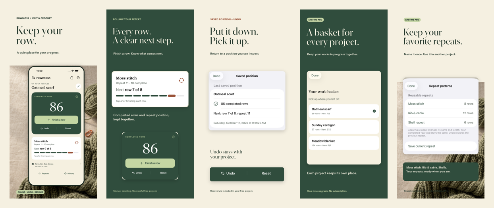
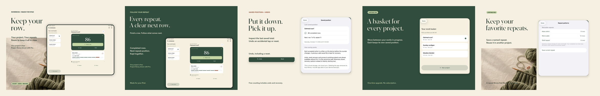

A quiet knitting and crochet counter for completed rows, next-repeat position and persistent undo.
Version 1.0(2) and Lifetime Pro submitted October 18, 2026. Both Waiting for Review; not yet approved or released. Universal iPhone and iPad.
One useful project is free. Lifetime Pro adds a basket of projects, reusable repeat patterns and history with one purchase.
Local storage. No account, ads, tracking or subscription. Universal iPhone/iPad, iOS15+.


By Sepideh Javanbakht Dalir · Arvinify
Privacy · Support · Case study